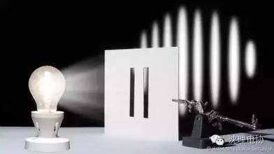
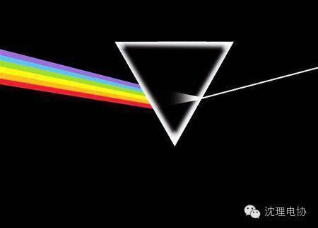
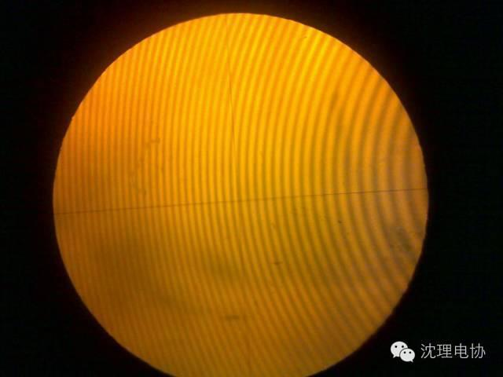
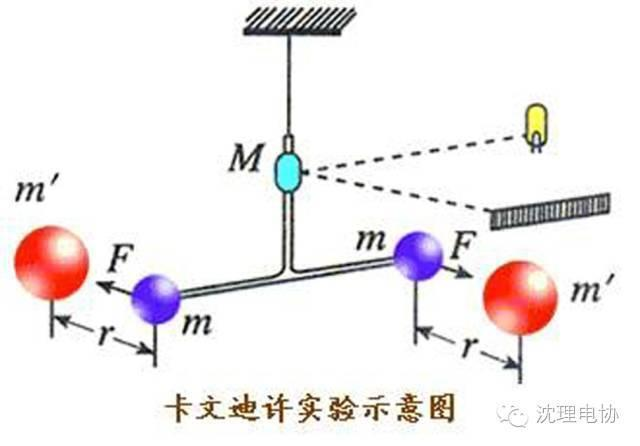
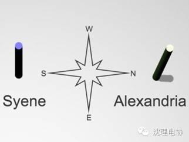
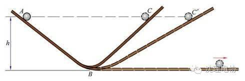
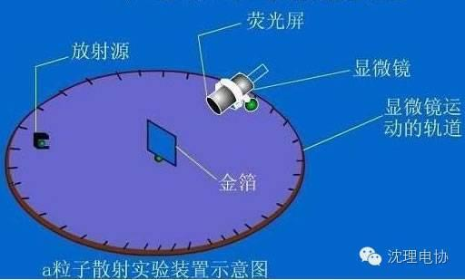
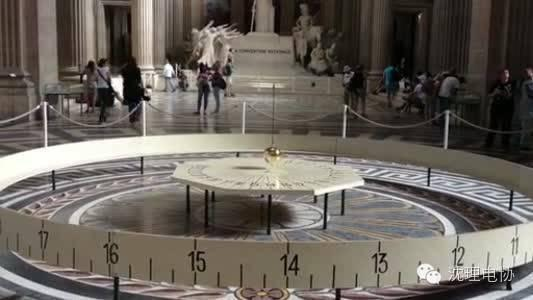

十大最美的物理实验

牛顿和托马斯·杨对光的性质的研究得出的结论都不完全的正确。光既不是简单由粒子构成，也不是一种单纯的波。20世纪初，麦克斯·普朗克和阿尔伯特·爱因斯坦分别指出一种叫光子的东西发出光和吸收光。但是其他实验还证明光是一种波状物。经过几十年发展的量子学说最终总结了两个矛盾的真理：光子和亚原子微粒（如电子、光子等等）是同时具有两种性质的微粒，物理上称它们：波粒二象性。

在16世纪末，人人都认为重量大的物体比重量小的物体下落的快，因为伟大的亚里士多德已经这么说了。伽利略，当时在比萨大学数学系任职，他大胆的向公众的观点挑战。著名的比萨斜塔实验已经成为科学中的一个故事：他从斜塔上同时扔下一轻一重的物体，让大家看到两个物体同时落地。伽利略挑战亚里士多德的代价也许是他失去工作，但他展示的是自然界的本质，而不是人类的权威，科学作出了最后的裁决。
很早以前，科学家就在研究电。人们知道这种无形的物质可以从天上的闪电中获得，也可以通过摩擦头发得到。1897年，英国物理学家J·J·托马斯已经确立电流是由带负电粒子即电子组成。1909年美国科学家罗伯特·米里肯开始测量电流的电荷。米里肯用一个香水瓶子的喷头向一个透明的小盒子里喷油滴。小盒子的顶部和底部分别接一个电池，让一边成为正电板，另一边成为负电板。当小油滴通过空气时，就会吸引一些静电，油滴下落的速度可以通过改变电板间的电压来控制。

埃萨克·牛顿出生那年，伽利略与世长辞。牛顿1665年毕业于剑桥大学的三一学院，后来因躲避鼠疫在家呆了两年，后来顺利地得到了工作。当时大家都认为白光是一种纯的没有其它颜色的光（亚里士多德就是这样认为的），而彩色光是一种不知何故发生变化的光。

牛顿也不是永远都正确的。在多次争吵后，牛顿让科学界接受了这样的观点：光是有微粒组成的，而不是一种波。1830年，英国医生、物理学家托马斯·杨用实验来验证这一观点。他在百叶窗上开了一个小洞，让光线通过，并用一面镜子反射透过的光线。然后他用一个厚约1/30英寸的纸片把这束光从中间分成两束。结果看到了相交的光线和阴影。这说明两束光线可以像波一样相互干涉。这个实验为一个世纪后量子学的创立起到了至关重要的作用。

牛顿的另一伟大贡献是他的万有引力定律，但是万有引力到底有多大？

古埃及一个现名为阿斯旺的小镇。在这个小镇上，夏日正午的阳光悬在头顶：物体没有影子，阳光直射入深水井中。埃拉托色尼亚是公元前3世纪亚历山大图书馆的馆长，他意识到这一信息可以帮助他估计地球的周长，在以后几年的时间里的同一天、同一时间，他在亚历山大测量了同一地点的物体的影子。发现太阳光线有轻微的倾斜，在垂直方向偏离了大约7度角。

伽利略继续提炼他有关物体运动的观点。他了一个6米多长、3米多宽的光滑直木板槽。再把这个木板的斜槽固定住，让铜球从木槽顶端沿斜面滑下，并用水钟测量铜球每次下滑的时间，研究它们之间的关系。亚里士多德曾预言滚动球的速度是均匀不变的；铜球滚动两倍的时间就走出两倍的路程。伽利略却证明铜球滚动的路程和时间的平方成反比：两倍的时间里，铜球滚动的4倍的距离，因为存在恒定的重力加速度。

1911年卢瑟福还在曼彻斯特大学做放射能的实验时，原子在人们的印象中就好像是“葡萄干布丁”，大量正电荷聚集的糊状物质，中间包含着电子的微粒。但是他和他的助手发现向金箔发射带正电的阿尔法微粒时少量被弹回，这是他们非常吃惊。卢瑟福计算出原子不是一团糊状物质，大部分物质集中在一个中心小核上，现在叫做核子，电子在它周围环绕。

去年，科学家们在南极安置一个摆钟，并观察它的摆动。他们是在重复1851年巴黎的一个著名实验。1851年法国科学家傅科在公众面前做了一个著名的实验，用一根长220英尺的钢丝将一个62磅重的头上带有铁笔的铁球悬挂在屋顶下，观测记录他前后摆动的轨迹。周围观众发现每次摆动都会稍稍偏离原来轨迹并发生旋转时，无不惊讶。实际上这是因为房屋在缓缓移动。

信息部/吴心成